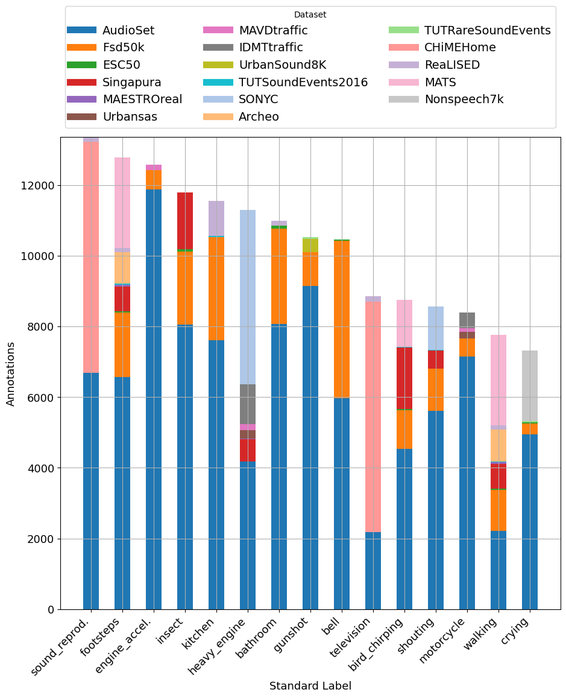
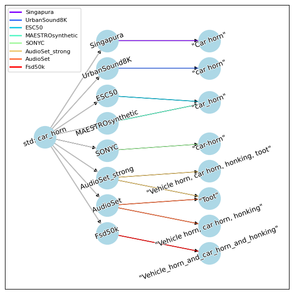
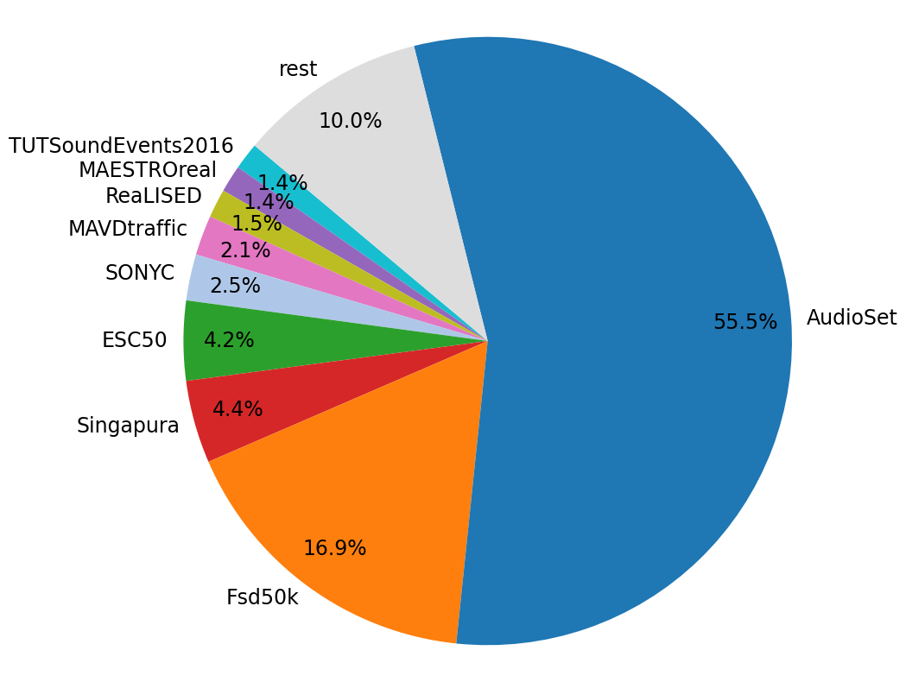

Building upon the hierarchical structure of AudioSet's ontology, SALT extends and standardizes labels across 24 publicly available environmental sound datasets, allowing the mapping of class labels from diverse datasets to a unified system.

The benefit of label aggregation in selected standardized labels.

Dataset mapping of the standard label "car_horn"

Contribution of dataset's original (default) labels to SALT after the standardization process.

Explore SALT
-
Human sounds
-
human_group_actions
- applause
- booing
-
crowd
- chatter
- large_crowd
- people_cheering
- speech_babbling
-
human_movement
-
footsteps
- running
- tap_dancing
-
walking
- shuffle
- stomp_stamp
-
-
human_non-speech_sounds
-
Heart_sounds_heartbeat
- heart_murmur
-
breathing
- gasp
- pant
- sighing
- snoring
- snorting
- wheeze
- child_babbling
- children_playing
- coughing
-
crying
- baby_crying
- whimpering
-
digestive
- drinking
-
eating
- biting
- burping
- chewing
- farting
- gargling
- hiccup
- stomach_rumble
- drinking_or_sipping
-
hands
-
clapping
- applause
- finger_snapping
-
- humming
-
laughing
- baby_laughing
- belly_laugh
- chuckling_and_chortling
- giggling
- snicker
- moaning
-
screaming
- female_screaming
- male_screaming
-
shouting
- battle_cry
- bellow
- children_shouting
- whoop
- yelling
- sneezing
- sniffing
- throat_cleaning
- whispering
- whistling
-
-
human_voice
-
child_voice
- child_babbling
- child_speaking
- children_playing
- children_shouting
-
crying
- baby_crying
- whimpering
- female_screaming
- groaning
- grunting
- humming
-
laughing
- baby_laughing
- belly_laugh
- chuckling_and_chortling
- giggling
- snicker
- male_screaming
- moaning
-
shouting
- battle_cry
- bellow
- children_shouting
- whoop
- yelling
- sighing
-
singing
- child_singing
- female_singing
- male_singing
- rapping
- sympathetic_singing
-
vocal_music
- a_capella
-
chant
- mantra
- choir_singing
- yodeling
-
talking
-
speech
-
announcement
- announcement_jingle
- announcement_speech
- chatter
- child_speaking
- conversation
- female_speaking
- male_speaking
- monologue
- speech_synthesizer
-
- whispering
-
- yawning
-
-
-
Animal
- animal_growling
-
domestic_animal
-
cat
- cat_meowing
- cat_purring
- caterwaul
-
dog
- dog_barking
- dog_bowing
- dog_howling
- dog_pant
- dog_whimpering
- dog_yipping
-
-
farm_animal
-
cattle_or_bovinae
- cow_moo
- yak
- cow
- donkey
-
fowl_animal
-
chicken_or_rooster
- rooster_cluck
- rooster_crowing
-
duck
- duck_quack
-
goose
- goose_honking
-
turkey
- turkey_gobble
-
-
goat
- goat_or_sheep_bleat
- hen
-
horse
- clip-clop
- horse_nicker
- horse_snort
- neigh_whinny
-
pig
- pig_oink
-
sheep
- goat_or_sheep_bleat
-
-
wild_animal
-
bird
-
bird_vocalization_call_or_song
- bird_chirping
- bird_squawk
- bird_wings_flap
-
crow
- crow_caw
- gull_seagull
-
owl
- owl_hoot
-
pigeon_dove
- pigeon_cooing
-
-
canidae_dogs_wolves
- dog_howling
- wolf_whistling
-
frog
- frog_croak
-
insect
- cricket
-
insect_buzz
- bee_or_wasp
- fly_housefly
- insect_chirping
- mosquito
-
lions_or_tigers
- lions_or_tigers_roaring
- monkey
-
rodents_rats_mice
- chipmunk
- mouse
- patter
- snake
- whale_vocalization
-
-
Music
- mobile_music
-
music_genre
-
aftrica_music
- afrobeat
- kwaito_music
-
ambient_music
- drone_music
-
asia_music
- carnatic_music
- music_of_Bollywood
- blues_music
- children_music
-
christian_music
- gospel_music
-
classical_music
- opera
-
country_music
- bluegrass_music
- swing_music
- disco_music
-
electronic_music
- UK_garage
-
drum_and_bass
- oldschool_jungle
- dubstep
- electro
- electronic_dance_music
- electronica
- house_music
- noise_music
- techno
- trance_music
- folk_music
- funk_music
-
hip_hop_music
- beatboxing_music
- grime_music
- trap_music
- independent_music
- jazz_music
-
latin_america_music
- cumbia_music
- flamenco_music
- funk_carioca_music
- kuduro_music
- salsa_music
- soca_music
- middle_eastern_music
- new-age_music
- pop_music
-
reggae_music
- dub_music
-
rock_music
- grunge
- heavy_metal
- progressive_rock
- psychedelic_rock
- punk_rock
- rock_and_roll
- ska_music
- soul_music
- traditional_music
-
vocal_music
- a_capella
-
chant
- mantra
- choir_singing
-
-
music_mood
- angry_music
- exciting_music
- funny_music
- happy_music
- sad_music
- scary_music
- tender_music
-
music_role
- background_music
- birthday_music
- christmas_music
- dance_music
- jingle_music
- lullaby
- soundtrack_music
- theme_music
- video_game_music
- wedding_music
-
musical_concepts
- Melody
- Song
- bassline
-
beat
- drum_beat
- chord
- drone
- harmony
- loop
- musical_note
-
musical_instrument
- accordion
- bagpipes
-
bowed_string_instrument
- cello
- double_bass
- string_section
-
violin_fiddle
- pizzicato
-
brass_instrument
- bugle
- cornet
- french_horn
- trombone
- trumpet
-
chime
- wind_chime
- didgeridoo
- harmonica
- harp
-
keyboard_(musical)
- harpsichord
-
organ
- electronic_organ
- hammond_organ
-
piano
-
electric_piano
- clavinet
- rhodes_piano
-
-
synthesizer
- mellotron
- sampler
- orchestra
-
percussion
- cowbell
-
cymbal
- crash_cymbal
- hi-hat
-
drum
- bass_drum
-
snare_drum
- drum_roll
- rimshot
- tabla
- timpani
-
drum_kit
- drum_machine
- gong
-
mallet_percussion
- glockenspiel
- marimba_and_xylophone
- steelpan
- vibraphone
-
rattle_(instrument)
- maraca
- tambourine
- tubular_bells
- wood_block
-
plucked_string_instrument
- banjo
- bass_guitar
- mandolin
-
playing_guitar
- acoustic_guitar
- electric_guitar
- guitar_strumming
- guitar_tapping
- steel_guitar_or_slide_guitar
- sitar
- ukulele
- zither
- shofar
- singing_bowl
- theremin
- vinyl_scratching
-
wind_or_woodwind_instrument
- bassoon
- clarinet
- flute
- oboe
-
saxophone
- alto_saxophone
- soprano_saxophone
- ringtone
- stationary_music
- urban_music
-
Sound of things
-
alarm_signal
- CO_detector
- alarm_clock_ringing
- bicycle_bell
- buzzer_ringing
- car_alarm_ringing
-
doorbell
- ding-dong
- error_signal
-
fire_alarm_ringing
- smoke_alarm
- foghorn_ringing
-
siren_ringing
- civil_defense_siren
- reverse_beeper
-
vehicle_siren_ringing
- ambulance_siren_ringing
- fire_truck_siren_ringing
- police_car_siren_ringing
-
telephone
- dial_tone
- phone_ringing
- ringtone
- telephone vibrating
- telephone_busy_signal
- telephone_dialing
-
vehicle_horn
- air_horn_or_truck_horn
- car_horn
-
whistle
- kettle_whistle
- steam_whistle
- audio_feedback
-
bathroom_sounds
- bathtub_(filling_or_washing)
-
brushing_teeth
-
toothbrush
- electric_toothbrush
-
- shower
- sink_(filling_or_washing)
- toilet_flush
- water_tap_or_faucet
-
bell
- bicycle_bell
- change_bell_ringing
-
chime
- wind_chime
- church_bell
- cowbell
-
doorbell
- ding-dong
- jingle_bell
- tuning_fork
- chain
-
domestic_sounds
- bathtub_(filling_or_washing)
- beater
- blender
- broadband_noise
-
brushing_teeth
-
toothbrush
- electric_toothbrush
-
- can_opening
- chopping_food
- coin_dropping
-
cooking
- frying
- crockery_breaking_and_smashing
- cupboard_open_or_close
-
cutlery_or_dishes
-
cutlery
- knife
-
dishes_or_pots_or_pans
- washing_dishes
-
- dishwasher
-
door
- door_knock
-
door_opens_or_closes
- door_slam
- door_wood_creak
- sliding_door
-
doorbell
- ding-dong
- drawer_open_or_close
- duct_tape
- electric_shaver
- furniture_dragging
- hair_dryer
- hook_and_loop_fastener
- kettle_whistle
- keys_jangling
- microwave_oven
- mouse_click
- object_fall
- paper_rustling
- radio
- refrigerator
- scissors
- shower
- shuffling_cards
- sink_(filling_or_washing)
- smoke_extractor
- switch_on_or_off
- television
- toilet_flush
-
typing
- keyboard_typing
- typewriter
- vacuum_cleaner
-
video_game/tv
- video_game
- washing_machine
- window_opens_or_closes
- writing
- zipper_(clothing)
-
engine
-
engine_idling
- bus_engine_idling
- car_engine_idling
- motorcycle_engine_idling
- truck_engine_idling
- engine_knocking
- engine_starting
-
heavy_engine_(low_frequency)
- bus_engine_accelerating
- bus_engine_idling
- truck_engine_accelerating
- truck_engine_idling
-
light_engine_(high_frequency)
- chainsaw
- dental_drill
- lawn_mower
- sewing_machine
-
medium_engine_(mid_frequency)
-
motorcycle_engine
- motorcycle_engine_accelerating
- motorcycle_engine_idling
-
-
vehicle_engine
-
bus_engine
- bus_compressor
- bus_engine_accelerating
- bus_engine_idling
-
car_engine
- car_engine_accelerating
- car_engine_idling
- car_passing_by
- race_car
-
engine_accelerating
- bus_engine_accelerating
- car_engine_accelerating
- motorcycle_engine_accelerating
- truck_engine_accelerating
-
motorcycle_engine
- motorcycle_engine_accelerating
- motorcycle_engine_idling
-
truck_engine
- truck_compressor
- truck_engine_accelerating
- truck_engine_idling
-
vehicle_compressor
- bus_compressor
- truck_compressor
-
-
-
glass
- glass_break
- glass_chink_or_clink
- glass_jingling
-
kitchen_sounds
- beater
- chopping_food
-
cooking
- frying
- crockery_breaking_and_smashing
-
cutlery_or_dishes
-
cutlery
- knife
-
dishes_or_pots_or_pans
- washing_dishes
-
- dishwasher
- kettle_whistle
- refrigerator
- smoke_extractor
- water_tap_or_faucet
-
liquid
-
hose_pump
- pump_(liquid)
- liquid_boiling
- liquid_dripping
-
liquid_pouring
- fill_(with_liquid)
- gush
- trickle_dribble
-
splashing
- slosh
- spray
- squish
- stir
-
- lock
-
machinery_impact
-
drilling
- jackhammer
- rock_drill
- hammering
- hoe_ram
- pile_driver
-
-
mechanisms
-
air_conditioner
- air_conditioning
-
camera
- single-lens_reflex_camera
- cash_register_beeping
-
clock_tick
- tick-tock
- coffee_machine
- gear
- mechanical_fan
- printer
- ratchet_or_pawl
- sewing_machine
-
-
miscellaneous_sources
-
arrow
-
thumb_or_thud
- clunk
- thunk
- whoosh_swoosh_swish
-
- duck_call_(hunting tool)
- sonar
-
sound_equipment
- electronic_tuner
-
microphone
- wind_noise_(microphone)
-
sound_effects_unit
- chorus_effect
- sweeping
-
-
non-machinery_impact
- breaking
- car_crash
-
explosion
- boom
- burst_or_pop
- eruption
- firecracker
- fireworks
-
gunshot
- artillery_fire
- cap_gun
- fusillade
- machine_gun
- sonic_boom
- glass_break
-
object_impact
- object_banging
- object_fall
- object_rustling
- object_snapping
-
specific_impact_sounds
- basketball_bounce
-
office_sounds
- duct_tape
- keyboard_typing
- keypress_tone
- mechanical_fan
- mouse_click
- photocopier
- printer
- typewriter
- shopping_cart
-
tools
- filing_(rasp)
- hammering
- jackhammer
-
power_tool
- dental_drill
- pulleys
- sanding
-
sawing
- hand_saw
-
powered_saw
- chainsaw
- large_rotating_saw
- small/medium_rotating_saw
-
vehicle
-
aircraft
-
aircraft_engine
- jet_engine
- propeller_airscrew
- airplane
- electric_rotor_drone
- helicopter
-
-
heavy_engine_(low_frequency)
- bus_engine_accelerating
- bus_engine_idling
- truck_engine_accelerating
- truck_engine_idling
- lawn_mower
-
non-motorized_land_vehicle
- bicycle
- cart
- skateboard
-
rail_transport
-
metro
- metro_approaching
- metro_leaving
- railroad_car_or_train_wagon
-
train
- electric_train
- train_horn
- train_wheels_squealing
- train_whistle
-
-
road_vehicle
-
brakes_squeaking
- bus_brake
- car_brake
- exhaust_brake
- friction_brake
- motorcycle_brake
-
car
- car_alarm_ringing
-
car_engine
- car_engine_accelerating
- car_engine_idling
- car_passing_by
- race_car
-
car_skidding
- tire_squealing
- car_wheel_rolling
- power_windows_electric windows
-
emergency_vehicle
-
vehicle_siren_ringing
- ambulance_siren_ringing
- fire_truck_siren_ringing
- police_car_siren_ringing
-
-
large vehicle
-
bus
-
bus_engine
- bus_compressor
- bus_engine_accelerating
- bus_engine_idling
- bus_wheel_rolling
-
-
truck
- air_horn_or_truck_horn
- ice_cream_truck
- reverse_beeper
-
truck_brake
- air_brake
-
truck_engine
- truck_compressor
- truck_engine_accelerating
- truck_engine_idling
- truck_wheel_rolling
-
vehicle_compressor
- bus_compressor
- truck_compressor
-
-
motorcycle
-
motorcycle_engine
- motorcycle_engine_accelerating
- motorcycle_engine_idling
- motorcycle_wheel_rolling
-
-
vehicle_engine
-
bus_engine
- bus_compressor
- bus_engine_accelerating
- bus_engine_idling
-
car_engine
- car_engine_accelerating
- car_engine_idling
- car_passing_by
- race_car
-
engine_accelerating
- bus_engine_accelerating
- car_engine_accelerating
- motorcycle_engine_accelerating
- truck_engine_accelerating
-
motorcycle_engine
- motorcycle_engine_accelerating
- motorcycle_engine_idling
-
truck_engine
- truck_compressor
- truck_engine_accelerating
- truck_engine_idling
-
vehicle_compressor
- bus_compressor
- truck_compressor
-
-
vehicle_horn
- air_horn_or_truck_horn
- car_horn
-
vehicle_passing_by
- car_passing_by
-
wheel_rolling
- bus_wheel_rolling
- car_wheel_rolling
- motorcycle_wheel_rolling
- truck_wheel_rolling
-
-
water_vehicle
- Rowboat_canoe_kayak
- motorboat_speedboat
- sailboat_sailing_ship
- ship
-
-
water_domestic
- bathtub_(filling_or_washing)
- sink_(filling_or_washing)
- toilet_flush
- water_tap_or_faucet
- windscreen_wiper
-
wood
-
chopping_wood
- wood_splinter
-
-
-
Source-ambiguous sounds
- cleaning
-
deformable_shell
- crumbling_or_crinkling
- crushing
- tearing
-
generic_impact_sounds
- bang
- bouncing
- breaking
- flap
- knock
- slap_or_smack
- smash_or_crash
- tapping
-
thumb_or_thud
- clunk
- thunk
- whack_or_thwack
- whip
- object_fall
-
onomatopoeia
- boing
-
brief_tone
- bleep_bleep
- clang
- ding
- ping
- screech
- squeal
- clatter
-
clicking
- clickety-clack
- clip-clop
- crack
- crackle
- creak
- crunch
- fizz
- hiss
- hum
- jingle_tinkle
- plop
- puff
- rattle
- rumble
- rustle
- sizzle
- snap
- squeak
- squish
- sweeping
- whir
- whoosh_swoosh_swish
- zing
-
other_sourceless
- pulse
-
sine_wave
- chirp_tone
- harmonic
- sound_effect
- plastic_crinkling
- silence
-
surface_contact
- grind
- roll
- rub
- scrape
- scratch
-
Natural sounds
-
fire
- crackle
- wildfire
-
thunderstorm
- thunder
-
water_natural
-
ocean
- waves
- pouring_water
-
rain
- rain_on_surface
- raindrop
- steam
-
water_drop
- raindrop
- water_gurgling
- water_stream
- waterfall
-
-
wind_blowing
- rustling_leaves
- wind_noise_(microphone)
-
-
Water
-
water_domestic
- bathtub_(filling_or_washing)
- sink_(filling_or_washing)
- toilet_flush
- water_tap_or_faucet
-
water_natural
-
ocean
- waves
- pouring_water
-
rain
- rain_on_surface
- raindrop
- steam
-
water_drop
- raindrop
- water_gurgling
- water_stream
- waterfall
-
-
-
Channel, environment and background
-
acoustic_environment
- echo
-
indoor_environment
- inside_public_space
- large_room_or_hall
- small_room
-
outdoor_environment
- outdoor_rural_or_natural
-
outdoor_urban_or_manmade
- traffic_noise
- reverberation
-
noise
-
background_noise
- distortion
- environmental_noise
- mains_hum
- sidetone
- static_noise
- tape_hiss
- cacophony
- speech_babbling
- throbbing
- vibration
-
white_or_pink_noise
- pink_noise
- white_noise
-
-
sound_reproduction
- gramophone_record
- radio
-
recording
- field_recording
- studio_recording
- television
-
video_game/tv
- video_game
-
- Other
Related Links
×